Sistem Identifikasi Suara Terbatas untuk Pengguna Tertentu (Minimal 2 Orang)#
Tahap 1 — Import Library#
Librosa untuk audio, SciPy untuk statistik sinyal, Scikit-learn untuk ML, dan Joblib untuk menyimpan model.
import os
import numpy as np
import pandas as pd
import librosa
import librosa.display
import soundfile as sf
import matplotlib.pyplot as plt
import seaborn as sns
from scipy.stats import skew, kurtosis
from sklearn.preprocessing import StandardScaler, LabelEncoder
from sklearn.model_selection import train_test_split
from sklearn.ensemble import RandomForestClassifier
from sklearn.svm import SVC
from sklearn.naive_bayes import GaussianNB
from sklearn.metrics import classification_report, confusion_matrix, accuracy_score
import joblib
Tahap 2 — Eksplorasi Struktur Dataset#
Augmentasi#
import os
import shutil
# Folder utama tempat menyimpan suara
base_folder = "suara"
# Target jumlah file minimum per kategori
target = 110
# Loop untuk tiap orang
for person in os.listdir(base_folder):
person_path = os.path.join(base_folder, person)
if os.path.isdir(person_path):
# Loop untuk tiap perintah (buka/tutup)
for command in os.listdir(person_path):
command_path = os.path.join(person_path, command)
if os.path.isdir(command_path):
files = [f for f in os.listdir(command_path) if f.endswith(".wav")]
count = len(files)
print(f"{person}/{command}: {count} file ditemukan.")
# Jika kurang dari target, duplikasi
if count < target:
needed = target - count
print(f" ➤ Menambahkan {needed} file agar total menjadi {target}.")
for i in range(needed):
src = os.path.join(command_path, files[i % count]) # duplikasi merata
dst = os.path.join(command_path, f"dupe_{i}.wav")
shutil.copy(src, dst)
else:
print(f" ✅ Sudah cukup ({count} file).")
print("\nProses selesai! Semua folder kini memiliki minimal 110 file.")
Vanisa/Tutup: 110 file ditemukan.
✅ Sudah cukup (110 file).
Vanisa/Buka: 110 file ditemukan.
✅ Sudah cukup (110 file).
Nadia/buka: 110 file ditemukan.
✅ Sudah cukup (110 file).
Nadia/tutup: 110 file ditemukan.
✅ Sudah cukup (110 file).
Proses selesai! Semua folder kini memiliki minimal 110 file.
base_folder = "suara"
for speaker in os.listdir(base_folder):
speaker_path = os.path.join(base_folder, speaker)
if os.path.isdir(speaker_path):
print(f"\n🎤 Speaker: {speaker}")
for command in os.listdir(speaker_path):
command_path = os.path.join(speaker_path, command)
if os.path.isdir(command_path):
files = [f for f in os.listdir(command_path) if f.endswith(".wav")]
print(f" 🎧 {command}: {len(files)} file ditemukan")
🎤 Speaker: Vanisa
🎧 Tutup: 110 file ditemukan
🎧 Buka: 110 file ditemukan
🎤 Speaker: Nadia
🎧 buka: 110 file ditemukan
🎧 tutup: 110 file ditemukan
Tahap 3: Preprocessing Audio#
Langkah ini akan:
Menyeragamkan sampling rate
Menghapus bagian diam
Menormalkan amplitudo
Menyimpan ulang hasil yang sudah bersih
import os
import librosa
import soundfile as sf
from tqdm import tqdm
def preprocess_audio(input_path, output_path, sr_target=22050):
"""
Membersihkan dan menyeragamkan file audio hingga level subfolder terdalam:
- Convert ke mono
- Sampling rate seragam
- Hapus bagian diam
- Normalisasi amplitudo
"""
for root, dirs, files in os.walk(input_path): # berjalan sampai ke subfolder terdalam
for file in files:
if file.endswith(".wav"):
file_path = os.path.join(root, file)
rel_path = os.path.relpath(root, input_path) # path relatif
save_dir = os.path.join(output_path, rel_path)
os.makedirs(save_dir, exist_ok=True)
try:
y, sr = librosa.load(file_path, sr=sr_target)
y, _ = librosa.effects.trim(y)
y = librosa.util.normalize(y)
save_path = os.path.join(save_dir, file)
sf.write(save_path, y, sr)
except Exception as e:
print(f"❌ Gagal memproses {file_path}: {e}")
print("✅ Preprocessing selesai. File hasil disimpan di folder:", output_path)
# Jalankan
preprocess_audio("suara", "clean_audio")
✅ Preprocessing selesai. File hasil disimpan di folder: clean_audio
Tahap 4: Cek hasil preprocessing#
import os
base_folder = "clean_audio"
for person in os.listdir(base_folder):
folder = os.path.join(base_folder, person)
if not os.path.isdir(folder):
continue # lewati kalau bukan folder
for sub in os.listdir(folder):
subfolder = os.path.join(folder, sub)
if not os.path.isdir(subfolder):
continue # lewati kalau bukan folder
files = [f for f in os.listdir(subfolder) if f.endswith(".wav")]
for file in files:
file_path = os.path.join(subfolder, file)
print(file_path)
clean_audio/Vanisa/Tutup/dupe_83.wav
clean_audio/Vanisa/Tutup/36.wav
clean_audio/Vanisa/Tutup/dupe_79.wav
clean_audio/Vanisa/Tutup/dupe_26.wav
clean_audio/Vanisa/Tutup/dupe_72.wav
clean_audio/Vanisa/Tutup/dupe_84.wav
clean_audio/Vanisa/Tutup/dupe_39.wav
clean_audio/Vanisa/Tutup/dupe_5.wav
clean_audio/Vanisa/Tutup/dupe_30.wav
clean_audio/Vanisa/Tutup/dupe_36.wav
clean_audio/Vanisa/Tutup/dupe_28.wav
clean_audio/Vanisa/Tutup/dupe_9.wav
clean_audio/Vanisa/Tutup/37.wav
clean_audio/Vanisa/Tutup/dupe_3.wav
clean_audio/Vanisa/Tutup/dupe_55.wav
clean_audio/Vanisa/Tutup/dupe_37.wav
clean_audio/Vanisa/Tutup/dupe_61.wav
clean_audio/Vanisa/Tutup/dupe_0.wav
clean_audio/Vanisa/Tutup/dupe_19.wav
clean_audio/Vanisa/Tutup/dupe_23.wav
clean_audio/Vanisa/Tutup/44.wav
clean_audio/Vanisa/Tutup/40.wav
clean_audio/Vanisa/Tutup/dupe_17.wav
clean_audio/Vanisa/Tutup/dupe_4.wav
clean_audio/Vanisa/Tutup/dupe_58.wav
clean_audio/Vanisa/Tutup/dupe_13.wav
clean_audio/Vanisa/Tutup/dupe_66.wav
clean_audio/Vanisa/Tutup/dupe_27.wav
clean_audio/Vanisa/Tutup/dupe_45.wav
clean_audio/Vanisa/Tutup/dupe_16.wav
clean_audio/Vanisa/Tutup/dupe_67.wav
clean_audio/Vanisa/Tutup/dupe_44.wav
clean_audio/Vanisa/Tutup/dupe_46.wav
clean_audio/Vanisa/Tutup/dupe_64.wav
clean_audio/Vanisa/Tutup/dupe_56.wav
clean_audio/Vanisa/Tutup/30.wav
clean_audio/Vanisa/Tutup/dupe_50.wav
clean_audio/Vanisa/Tutup/35.wav
clean_audio/Vanisa/Tutup/26.wav
clean_audio/Vanisa/Tutup/dupe_75.wav
clean_audio/Vanisa/Tutup/dupe_12.wav
clean_audio/Vanisa/Tutup/33.wav
clean_audio/Vanisa/Tutup/dupe_52.wav
clean_audio/Vanisa/Tutup/43.wav
clean_audio/Vanisa/Tutup/dupe_47.wav
clean_audio/Vanisa/Tutup/42.wav
clean_audio/Vanisa/Tutup/dupe_34.wav
clean_audio/Vanisa/Tutup/dupe_78.wav
clean_audio/Vanisa/Tutup/41.wav
clean_audio/Vanisa/Tutup/dupe_33.wav
clean_audio/Vanisa/Tutup/dupe_20.wav
clean_audio/Vanisa/Tutup/dupe_35.wav
clean_audio/Vanisa/Tutup/dupe_48.wav
clean_audio/Vanisa/Tutup/dupe_49.wav
clean_audio/Vanisa/Tutup/27.wav
clean_audio/Vanisa/Tutup/dupe_24.wav
clean_audio/Vanisa/Tutup/39.wav
clean_audio/Vanisa/Tutup/46.wav
clean_audio/Vanisa/Tutup/dupe_8.wav
clean_audio/Vanisa/Tutup/dupe_7.wav
clean_audio/Vanisa/Tutup/dupe_41.wav
clean_audio/Vanisa/Tutup/dupe_82.wav
clean_audio/Vanisa/Tutup/dupe_57.wav
clean_audio/Vanisa/Tutup/dupe_32.wav
clean_audio/Vanisa/Tutup/dupe_18.wav
clean_audio/Vanisa/Tutup/dupe_38.wav
clean_audio/Vanisa/Tutup/dupe_60.wav
clean_audio/Vanisa/Tutup/dupe_81.wav
clean_audio/Vanisa/Tutup/29.wav
clean_audio/Vanisa/Tutup/dupe_62.wav
clean_audio/Vanisa/Tutup/dupe_1.wav
clean_audio/Vanisa/Tutup/dupe_71.wav
clean_audio/Vanisa/Tutup/28.wav
clean_audio/Vanisa/Tutup/47.wav
clean_audio/Vanisa/Tutup/48.wav
clean_audio/Vanisa/Tutup/dupe_10.wav
clean_audio/Vanisa/Tutup/dupe_80.wav
clean_audio/Vanisa/Tutup/dupe_63.wav
clean_audio/Vanisa/Tutup/32.wav
clean_audio/Vanisa/Tutup/dupe_68.wav
clean_audio/Vanisa/Tutup/dupe_59.wav
clean_audio/Vanisa/Tutup/dupe_14.wav
clean_audio/Vanisa/Tutup/dupe_29.wav
clean_audio/Vanisa/Tutup/50.wav
clean_audio/Vanisa/Tutup/34.wav
clean_audio/Vanisa/Tutup/dupe_77.wav
clean_audio/Vanisa/Tutup/dupe_15.wav
clean_audio/Vanisa/Tutup/45.wav
clean_audio/Vanisa/Tutup/dupe_53.wav
clean_audio/Vanisa/Tutup/dupe_31.wav
clean_audio/Vanisa/Tutup/dupe_65.wav
clean_audio/Vanisa/Tutup/49.wav
clean_audio/Vanisa/Tutup/38.wav
clean_audio/Vanisa/Tutup/dupe_42.wav
clean_audio/Vanisa/Tutup/dupe_21.wav
clean_audio/Vanisa/Tutup/dupe_76.wav
clean_audio/Vanisa/Tutup/31.wav
clean_audio/Vanisa/Tutup/dupe_6.wav
clean_audio/Vanisa/Tutup/dupe_54.wav
clean_audio/Vanisa/Tutup/dupe_74.wav
clean_audio/Vanisa/Tutup/dupe_2.wav
clean_audio/Vanisa/Tutup/dupe_51.wav
clean_audio/Vanisa/Tutup/dupe_22.wav
clean_audio/Vanisa/Tutup/dupe_40.wav
clean_audio/Vanisa/Tutup/dupe_25.wav
clean_audio/Vanisa/Tutup/dupe_43.wav
clean_audio/Vanisa/Tutup/dupe_73.wav
clean_audio/Vanisa/Tutup/dupe_70.wav
clean_audio/Vanisa/Tutup/dupe_11.wav
clean_audio/Vanisa/Tutup/dupe_69.wav
clean_audio/Vanisa/Buka/dupe_83.wav
clean_audio/Vanisa/Buka/dupe_79.wav
clean_audio/Vanisa/Buka/dupe_26.wav
clean_audio/Vanisa/Buka/dupe_72.wav
clean_audio/Vanisa/Buka/dupe_84.wav
clean_audio/Vanisa/Buka/19.wav
clean_audio/Vanisa/Buka/dupe_39.wav
clean_audio/Vanisa/Buka/dupe_5.wav
clean_audio/Vanisa/Buka/dupe_30.wav
clean_audio/Vanisa/Buka/dupe_36.wav
clean_audio/Vanisa/Buka/dupe_28.wav
clean_audio/Vanisa/Buka/dupe_9.wav
clean_audio/Vanisa/Buka/dupe_3.wav
clean_audio/Vanisa/Buka/dupe_55.wav
clean_audio/Vanisa/Buka/dupe_37.wav
clean_audio/Vanisa/Buka/dupe_61.wav
clean_audio/Vanisa/Buka/dupe_0.wav
clean_audio/Vanisa/Buka/16.wav
clean_audio/Vanisa/Buka/dupe_19.wav
clean_audio/Vanisa/Buka/dupe_23.wav
clean_audio/Vanisa/Buka/dupe_17.wav
clean_audio/Vanisa/Buka/24.wav
clean_audio/Vanisa/Buka/dupe_4.wav
clean_audio/Vanisa/Buka/1.wav
clean_audio/Vanisa/Buka/dupe_58.wav
clean_audio/Vanisa/Buka/dupe_13.wav
clean_audio/Vanisa/Buka/10.wav
clean_audio/Vanisa/Buka/dupe_66.wav
clean_audio/Vanisa/Buka/dupe_27.wav
clean_audio/Vanisa/Buka/dupe_45.wav
clean_audio/Vanisa/Buka/dupe_16.wav
clean_audio/Vanisa/Buka/dupe_67.wav
clean_audio/Vanisa/Buka/14.wav
clean_audio/Vanisa/Buka/dupe_44.wav
clean_audio/Vanisa/Buka/dupe_46.wav
clean_audio/Vanisa/Buka/2.wav
clean_audio/Vanisa/Buka/dupe_64.wav
clean_audio/Vanisa/Buka/dupe_56.wav
clean_audio/Vanisa/Buka/7.wav
clean_audio/Vanisa/Buka/dupe_50.wav
clean_audio/Vanisa/Buka/dupe_75.wav
clean_audio/Vanisa/Buka/dupe_12.wav
clean_audio/Vanisa/Buka/21.wav
clean_audio/Vanisa/Buka/dupe_52.wav
clean_audio/Vanisa/Buka/20.wav
clean_audio/Vanisa/Buka/dupe_47.wav
clean_audio/Vanisa/Buka/dupe_34.wav
clean_audio/Vanisa/Buka/17.wav
clean_audio/Vanisa/Buka/dupe_78.wav
clean_audio/Vanisa/Buka/dupe_33.wav
clean_audio/Vanisa/Buka/dupe_20.wav
clean_audio/Vanisa/Buka/dupe_35.wav
clean_audio/Vanisa/Buka/dupe_48.wav
clean_audio/Vanisa/Buka/6.wav
clean_audio/Vanisa/Buka/dupe_49.wav
clean_audio/Vanisa/Buka/dupe_24.wav
clean_audio/Vanisa/Buka/dupe_8.wav
clean_audio/Vanisa/Buka/dupe_7.wav
clean_audio/Vanisa/Buka/dupe_41.wav
clean_audio/Vanisa/Buka/dupe_82.wav
clean_audio/Vanisa/Buka/dupe_57.wav
clean_audio/Vanisa/Buka/dupe_32.wav
clean_audio/Vanisa/Buka/25.wav
clean_audio/Vanisa/Buka/23.wav
clean_audio/Vanisa/Buka/dupe_18.wav
clean_audio/Vanisa/Buka/dupe_38.wav
clean_audio/Vanisa/Buka/5.wav
clean_audio/Vanisa/Buka/dupe_60.wav
clean_audio/Vanisa/Buka/dupe_81.wav
clean_audio/Vanisa/Buka/dupe_62.wav
clean_audio/Vanisa/Buka/8.wav
clean_audio/Vanisa/Buka/dupe_1.wav
clean_audio/Vanisa/Buka/dupe_71.wav
clean_audio/Vanisa/Buka/12.wav
clean_audio/Vanisa/Buka/dupe_10.wav
clean_audio/Vanisa/Buka/dupe_80.wav
clean_audio/Vanisa/Buka/dupe_63.wav
clean_audio/Vanisa/Buka/dupe_68.wav
clean_audio/Vanisa/Buka/dupe_59.wav
clean_audio/Vanisa/Buka/dupe_14.wav
clean_audio/Vanisa/Buka/dupe_29.wav
clean_audio/Vanisa/Buka/dupe_77.wav
clean_audio/Vanisa/Buka/dupe_15.wav
clean_audio/Vanisa/Buka/4.wav
clean_audio/Vanisa/Buka/dupe_53.wav
clean_audio/Vanisa/Buka/dupe_31.wav
clean_audio/Vanisa/Buka/dupe_65.wav
clean_audio/Vanisa/Buka/11.wav
clean_audio/Vanisa/Buka/dupe_42.wav
clean_audio/Vanisa/Buka/dupe_21.wav
clean_audio/Vanisa/Buka/dupe_76.wav
clean_audio/Vanisa/Buka/dupe_6.wav
clean_audio/Vanisa/Buka/3.wav
clean_audio/Vanisa/Buka/dupe_54.wav
clean_audio/Vanisa/Buka/9.wav
clean_audio/Vanisa/Buka/dupe_74.wav
clean_audio/Vanisa/Buka/dupe_2.wav
clean_audio/Vanisa/Buka/dupe_51.wav
clean_audio/Vanisa/Buka/dupe_22.wav
clean_audio/Vanisa/Buka/dupe_40.wav
clean_audio/Vanisa/Buka/13.wav
clean_audio/Vanisa/Buka/dupe_25.wav
clean_audio/Vanisa/Buka/15.wav
clean_audio/Vanisa/Buka/dupe_43.wav
clean_audio/Vanisa/Buka/22.wav
clean_audio/Vanisa/Buka/dupe_73.wav
clean_audio/Vanisa/Buka/dupe_70.wav
clean_audio/Vanisa/Buka/dupe_11.wav
clean_audio/Vanisa/Buka/18.wav
clean_audio/Vanisa/Buka/dupe_69.wav
clean_audio/Nadia/buka/buka92.wav
clean_audio/Nadia/buka/buka54.wav
clean_audio/Nadia/buka/buka75.wav
clean_audio/Nadia/buka/buka10.wav
clean_audio/Nadia/buka/buka53.wav
clean_audio/Nadia/buka/buka86.wav
clean_audio/Nadia/buka/buka105.wav
clean_audio/Nadia/buka/buka65.wav
clean_audio/Nadia/buka/buka87.wav
clean_audio/Nadia/buka/buka64.wav
clean_audio/Nadia/buka/buka61.wav
clean_audio/Nadia/buka/buka14.wav
clean_audio/Nadia/buka/buka96.wav
clean_audio/Nadia/buka/buka104.wav
clean_audio/Nadia/buka/buka59.wav
clean_audio/Nadia/buka/buka13.wav
clean_audio/Nadia/buka/buka48.wav
clean_audio/Nadia/buka/buka 57.wav
clean_audio/Nadia/buka/buka78.wav
clean_audio/Nadia/buka/buka97.wav
clean_audio/Nadia/buka/buka3.wav
clean_audio/Nadia/buka/buka27.wav
clean_audio/Nadia/buka/buka52.wav
clean_audio/Nadia/buka/buka23.wav
clean_audio/Nadia/buka/buka76.wav
clean_audio/Nadia/buka/buka80.wav
clean_audio/Nadia/buka/buka42.wav
clean_audio/Nadia/buka/buka66.wav
clean_audio/Nadia/buka/buka47.wav
clean_audio/Nadia/buka/buka12.wav
clean_audio/Nadia/buka/buka4.wav
clean_audio/Nadia/buka/buka84.wav
clean_audio/Nadia/buka/buka15.wav
clean_audio/Nadia/buka/buka16.wav
clean_audio/Nadia/buka/buka11.wav
clean_audio/Nadia/buka/buka19.wav
clean_audio/Nadia/buka/buka56.wav
clean_audio/Nadia/buka/buka49.wav
clean_audio/Nadia/buka/buka73.wav
clean_audio/Nadia/buka/buka91.wav
clean_audio/Nadia/buka/buka30.wav
clean_audio/Nadia/buka/buka37.wav
clean_audio/Nadia/buka/buka35.wav
clean_audio/Nadia/buka/buka77.wav
clean_audio/Nadia/buka/buka106.wav
clean_audio/Nadia/buka/buka32.wav
clean_audio/Nadia/buka/buka63.wav
clean_audio/Nadia/buka/buka41.wav
clean_audio/Nadia/buka/buka70.wav
clean_audio/Nadia/buka/buka29.wav
clean_audio/Nadia/buka/buka98.wav
clean_audio/Nadia/buka/buka94.wav
clean_audio/Nadia/buka/buka22.wav
clean_audio/Nadia/buka/buka110.wav
clean_audio/Nadia/buka/buka31.wav
clean_audio/Nadia/buka/buka26.wav
clean_audio/Nadia/buka/buka38.wav
clean_audio/Nadia/buka/buka82.wav
clean_audio/Nadia/buka/buka103.wav
clean_audio/Nadia/buka/buka34.wav
clean_audio/Nadia/buka/buka9.wav
clean_audio/Nadia/buka/buka89.wav
clean_audio/Nadia/buka/buka24.wav
clean_audio/Nadia/buka/buka43.wav
clean_audio/Nadia/buka/buka72.wav
clean_audio/Nadia/buka/buka62.wav
clean_audio/Nadia/buka/buka20.wav
clean_audio/Nadia/buka/buka39.wav
clean_audio/Nadia/buka/buka100.wav
clean_audio/Nadia/buka/buka108.wav
clean_audio/Nadia/buka/buka17.wav
clean_audio/Nadia/buka/buka8.wav
clean_audio/Nadia/buka/buka33.wav
clean_audio/Nadia/buka/buka68.wav
clean_audio/Nadia/buka/buka95.wav
clean_audio/Nadia/buka/buka90.wav
clean_audio/Nadia/buka/buka69.wav
clean_audio/Nadia/buka/buka93.wav
clean_audio/Nadia/buka/buka71.wav
clean_audio/Nadia/buka/buka88.wav
clean_audio/Nadia/buka/buka102.wav
clean_audio/Nadia/buka/buka101.wav
clean_audio/Nadia/buka/buka58.wav
clean_audio/Nadia/buka/buka7.wav
clean_audio/Nadia/buka/buka67.wav
clean_audio/Nadia/buka/buka 1.wav
clean_audio/Nadia/buka/buka109.wav
clean_audio/Nadia/buka/buka40.wav
clean_audio/Nadia/buka/buka107.wav
clean_audio/Nadia/buka/buka46.wav
clean_audio/Nadia/buka/buka85.wav
clean_audio/Nadia/buka/buka45.wav
clean_audio/Nadia/buka/buka60.wav
clean_audio/Nadia/buka/buka2.wav
clean_audio/Nadia/buka/buka74.wav
clean_audio/Nadia/buka/buka83.wav
clean_audio/Nadia/buka/buka6.wav
clean_audio/Nadia/buka/buka55.wav
clean_audio/Nadia/buka/buka18.wav
clean_audio/Nadia/buka/buka50.wav
clean_audio/Nadia/buka/buka79.wav
clean_audio/Nadia/buka/buka28.wav
clean_audio/Nadia/buka/buka5.wav
clean_audio/Nadia/buka/buka99.wav
clean_audio/Nadia/buka/buka81.wav
clean_audio/Nadia/buka/buka51.wav
clean_audio/Nadia/buka/buka25.wav
clean_audio/Nadia/buka/buka21.wav
clean_audio/Nadia/buka/buka36.wav
clean_audio/Nadia/buka/buka44.wav
clean_audio/Nadia/tutup/tutup74.wav
clean_audio/Nadia/tutup/tutup37.wav
clean_audio/Nadia/tutup/tutup94.wav
clean_audio/Nadia/tutup/tutup102.wav
clean_audio/Nadia/tutup/tutup89.wav
clean_audio/Nadia/tutup/tutup27.wav
clean_audio/Nadia/tutup/tutup65.wav
clean_audio/Nadia/tutup/tutup39.wav
clean_audio/Nadia/tutup/tutup38.wav
clean_audio/Nadia/tutup/tutup52.wav
clean_audio/Nadia/tutup/tutup9.wav
clean_audio/Nadia/tutup/tutup81.wav
clean_audio/Nadia/tutup/tutup106.wav
clean_audio/Nadia/tutup/tutup46.wav
clean_audio/Nadia/tutup/tutup67.wav
clean_audio/Nadia/tutup/tutup11.wav
clean_audio/Nadia/tutup/tutup21.wav
clean_audio/Nadia/tutup/tutup41.wav
clean_audio/Nadia/tutup/tutup99.wav
clean_audio/Nadia/tutup/tutup45.wav
clean_audio/Nadia/tutup/tutup60.wav
clean_audio/Nadia/tutup/tutup25.wav
clean_audio/Nadia/tutup/tutup15.wav
clean_audio/Nadia/tutup/tutup26.wav
clean_audio/Nadia/tutup/tutup42.wav
clean_audio/Nadia/tutup/tutup50.wav
clean_audio/Nadia/tutup/tutup107.wav
clean_audio/Nadia/tutup/tutup33.wav
clean_audio/Nadia/tutup/tutup63.wav
clean_audio/Nadia/tutup/tutup35.wav
clean_audio/Nadia/tutup/tutup36.wav
clean_audio/Nadia/tutup/tutup58.wav
clean_audio/Nadia/tutup/tutup12.wav
clean_audio/Nadia/tutup/tutup77.wav
clean_audio/Nadia/tutup/tutup98.wav
clean_audio/Nadia/tutup/tutup80.wav
clean_audio/Nadia/tutup/tutup59.wav
clean_audio/Nadia/tutup/tutup97.wav
clean_audio/Nadia/tutup/tutup29.wav
clean_audio/Nadia/tutup/tutup61.wav
clean_audio/Nadia/tutup/tutup66.wav
clean_audio/Nadia/tutup/tutup100.wav
clean_audio/Nadia/tutup/tutup28.wav
clean_audio/Nadia/tutup/tutup19.wav
clean_audio/Nadia/tutup/tutup17.wav
clean_audio/Nadia/tutup/tutup79.wav
clean_audio/Nadia/tutup/tutup23.wav
clean_audio/Nadia/tutup/tutup56.wav
clean_audio/Nadia/tutup/tutup2.wav
clean_audio/Nadia/tutup/tutup78.wav
clean_audio/Nadia/tutup/tutup64.wav
clean_audio/Nadia/tutup/tutup47.wav
clean_audio/Nadia/tutup/tutup16.wav
clean_audio/Nadia/tutup/tutup92.wav
clean_audio/Nadia/tutup/tutup68.wav
clean_audio/Nadia/tutup/tutup49.wav
clean_audio/Nadia/tutup/tutup83.wav
clean_audio/Nadia/tutup/tutup75.wav
clean_audio/Nadia/tutup/tutup109.wav
clean_audio/Nadia/tutup/tutup93.wav
clean_audio/Nadia/tutup/tutup87.wav
clean_audio/Nadia/tutup/tutup1.wav
clean_audio/Nadia/tutup/tutup14.wav
clean_audio/Nadia/tutup/tutup5.wav
clean_audio/Nadia/tutup/tutup73.wav
clean_audio/Nadia/tutup/tutup104.wav
clean_audio/Nadia/tutup/tutup96.wav
clean_audio/Nadia/tutup/tutup13.wav
clean_audio/Nadia/tutup/tutup108.wav
clean_audio/Nadia/tutup/tutup90.wav
clean_audio/Nadia/tutup/tutup54.wav
clean_audio/Nadia/tutup/tutup85.wav
clean_audio/Nadia/tutup/tutup55.wav
clean_audio/Nadia/tutup/tutup34.wav
clean_audio/Nadia/tutup/tutup7.wav
clean_audio/Nadia/tutup/tutup86.wav
clean_audio/Nadia/tutup/tutup51.wav
clean_audio/Nadia/tutup/tutup31.wav
clean_audio/Nadia/tutup/tutup22.wav
clean_audio/Nadia/tutup/tutup69.wav
clean_audio/Nadia/tutup/tutup44.wav
clean_audio/Nadia/tutup/tutup43.wav
clean_audio/Nadia/tutup/tutup4.wav
clean_audio/Nadia/tutup/tutup62.wav
clean_audio/Nadia/tutup/tutup88.wav
clean_audio/Nadia/tutup/tutup91.wav
clean_audio/Nadia/tutup/tutup3.wav
clean_audio/Nadia/tutup/tutup20.wav
clean_audio/Nadia/tutup/tutup101.wav
clean_audio/Nadia/tutup/tutup40.wav
clean_audio/Nadia/tutup/tutup82.wav
clean_audio/Nadia/tutup/tutup24.wav
clean_audio/Nadia/tutup/tutup84.wav
clean_audio/Nadia/tutup/tutup48.wav
clean_audio/Nadia/tutup/tutup103.wav
clean_audio/Nadia/tutup/tutup72.wav
clean_audio/Nadia/tutup/tutup18.wav
clean_audio/Nadia/tutup/tutup8.wav
clean_audio/Nadia/tutup/tutup10.wav
clean_audio/Nadia/tutup/tutup53.wav
clean_audio/Nadia/tutup/tutup110.wav
clean_audio/Nadia/tutup/tutup105.wav
clean_audio/Nadia/tutup/tutup95.wav
clean_audio/Nadia/tutup/tutup76.wav
clean_audio/Nadia/tutup/tutup57.wav
clean_audio/Nadia/tutup/tutup70.wav
clean_audio/Nadia/tutup/tutup30.wav
clean_audio/Nadia/tutup/tutup71.wav
clean_audio/Nadia/tutup/tutup6.wav
clean_audio/Nadia/tutup/tutup32.wav
Tahap 5: Visualisasi Bentuk Gelombang (Waveform & Spectrogram)#
Untuk melihat perbedaan karakteristik sinyal antara suara “buka” dan “tutup”.
import librosa
import librosa.display
import matplotlib.pyplot as plt
import os
# Pilih contoh file dari setiap kelas
file_buka = "clean_audio/Nadia/buka/buka 1.wav" # ubah sesuai nama file kamu
file_tutup = "clean_audio/Nadia/tutup/tutup1.wav"
# Fungsi bantu untuk visualisasi
def plot_waveform_and_spectrogram(file_path, title):
y, sr = librosa.load(file_path, sr=None)
plt.figure(figsize=(12, 6))
# --- Plot Waveform ---
plt.subplot(2, 1, 1)
librosa.display.waveshow(y, sr=sr, alpha=0.6)
plt.title(f"Waveform - {title}")
plt.xlabel("Waktu (detik)")
plt.ylabel("Amplitudo")
# --- Plot Spectrogram ---
plt.subplot(2, 1, 2)
spec = librosa.feature.melspectrogram(y=y, sr=sr, n_mels=128, fmax=8000)
spec_db = librosa.power_to_db(spec, ref=np.max)
librosa.display.specshow(spec_db, sr=sr, x_axis="time", y_axis="mel", fmax=8000, cmap="magma")
plt.title(f"Mel-Spectrogram - {title}")
plt.colorbar(format="%+2.0f dB")
plt.tight_layout()
plt.show()
# --- Tampilkan visualisasi ---
plot_waveform_and_spectrogram(file_buka, "Kata: BUKA")
plot_waveform_and_spectrogram(file_tutup, "Kata: TUTUP")
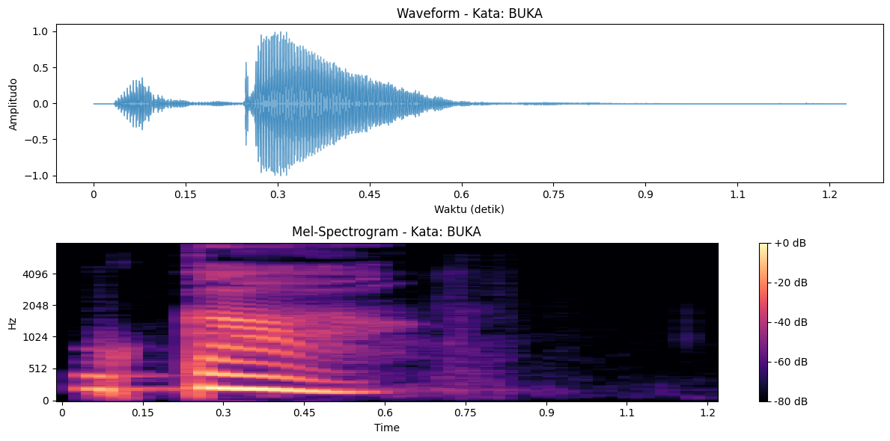
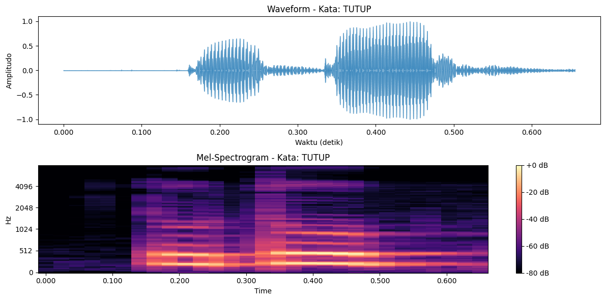
Tahap 6: Ekstraksi Fitur Audio#
Mengubah setiap file .wav menjadi vektor numerik yang menggambarkan ciri khas suara (misalnya nada, tempo, energi, dll).
💡 Fitur yang Akan Diekstrak:
ZCR (Zero Crossing Rate) → seberapa sering sinyal berganti tanda (+/-)
RMS (Root Mean Square Energy) → energi rata-rata sinyal
Spectral Centroid → pusat energi spektrum (nada rata-rata)
Spectral Bandwidth → sebaran frekuensi
Spectral Contrast → kontras antara puncak dan lembah energi
MFCC (Mel-Frequency Cepstral Coefficients) → fitur utama untuk pengenalan suara (biasanya 13–20 koefisien)
# ====================================================
# 🎯 TAHAP 6 — EKSTRAKSI FITUR AUDIO (PERBAIKAN FINAL)
# ====================================================
import os
import numpy as np
import pandas as pd
import librosa
from tqdm import tqdm
# Folder hasil preprocessing
base_path = "clean_audio"
# -------------------------------
# 🔹 Fungsi bantu ekstraksi fitur
# -------------------------------
def zero_crossing_rate(y):
"""Menghitung Zero Crossing Rate"""
return np.mean(librosa.feature.zero_crossing_rate(y=y).T, axis=0)[0]
def rms(signal):
"""Menghitung Root Mean Square (energi sinyal)"""
return np.sqrt(np.mean(signal**2))
def spectral_centroid(y, sr):
"""Rata-rata spectral centroid"""
return np.mean(librosa.feature.spectral_centroid(y=y, sr=sr))
def spectral_bandwidth(y, sr):
"""Rata-rata spectral bandwidth"""
return np.mean(librosa.feature.spectral_bandwidth(y=y, sr=sr))
def spectral_contrast(y, sr):
"""Rata-rata spectral contrast"""
return np.mean(librosa.feature.spectral_contrast(y=y, sr=sr))
def mfcc_features(y, sr, n_mfcc=13):
"""Rata-rata dari MFCC coefficients"""
mfccs = librosa.feature.mfcc(y=y, sr=sr, n_mfcc=n_mfcc)
return np.mean(mfccs, axis=1) # hasil 13 dimensi
# ---------------------------------------------------
# 🔹 Proses semua file dan ekstraksi fitur numeriknya
# ---------------------------------------------------
features = []
# Loop per orang (misal Nadia, Vanisa)
for person in os.listdir(base_path):
person_folder = os.path.join(base_path, person)
if not os.path.isdir(person_folder):
continue
# Loop ke dalam subfolder (misal buka, tutup)
for subfolder in os.listdir(person_folder):
sub_path = os.path.join(person_folder, subfolder)
if not os.path.isdir(sub_path):
continue
# Loop tiap file .wav di subfolder
for file in tqdm(os.listdir(sub_path), desc=f"Ekstraksi fitur {person}/{subfolder}"):
if file.endswith(".wav"):
file_path = os.path.join(sub_path, file)
try:
y, sr = librosa.load(file_path, sr=22050)
# Ambil fitur utama
zcr = zero_crossing_rate(y)
energy = rms(y)
sc = spectral_centroid(y, sr)
sb = spectral_bandwidth(y, sr)
scon = spectral_contrast(y, sr)
mfccs = mfcc_features(y, sr)
# Gabungkan semua fitur
data_row = [f"{person}_{subfolder}", zcr, energy, sc, sb, scon] + mfccs.tolist()
features.append(data_row)
except Exception as e:
print(f"❌ Gagal ekstraksi {file_path}: {e}")
# ---------------------------------------
# 🔹 Simpan hasil fitur ke dataframe CSV
# ---------------------------------------
columns = ['label', 'zcr', 'rms', 'spectral_centroid', 'spectral_bandwidth', 'spectral_contrast'] \
+ [f'mfcc_{i+1}' for i in range(13)]
df_features = pd.DataFrame(features, columns=columns)
# Simpan ke file CSV
df_features.to_csv("audio_features.csv", index=False)
print(f"✅ Ekstraksi fitur selesai ({len(df_features)} file berhasil) dan disimpan ke 'audio_features.csv'")
Ekstraksi fitur Vanisa/Tutup: 0%| | 0/110 [00:00<?, ?it/s]
Ekstraksi fitur Vanisa/Tutup: 3%|█▎ | 3/110 [00:00<00:04, 24.32it/s]
Ekstraksi fitur Vanisa/Tutup: 5%|██▋ | 6/110 [00:00<00:04, 23.83it/s]
Ekstraksi fitur Vanisa/Tutup: 9%|████▎ | 10/110 [00:00<00:03, 27.93it/s]
Ekstraksi fitur Vanisa/Tutup: 12%|█████▋ | 13/110 [00:00<00:04, 19.73it/s]
Ekstraksi fitur Vanisa/Tutup: 16%|███████▊ | 18/110 [00:00<00:03, 26.06it/s]
Ekstraksi fitur Vanisa/Tutup: 21%|██████████ | 23/110 [00:00<00:02, 30.35it/s]
Ekstraksi fitur Vanisa/Tutup: 25%|███████████▊ | 27/110 [00:00<00:02, 30.24it/s]
Ekstraksi fitur Vanisa/Tutup: 29%|█████████████▉ | 32/110 [00:01<00:02, 34.31it/s]
Ekstraksi fitur Vanisa/Tutup: 34%|████████████████▏ | 37/110 [00:01<00:01, 36.95it/s]
Ekstraksi fitur Vanisa/Tutup: 37%|█████████████████▉ | 41/110 [00:01<00:01, 34.93it/s]
Ekstraksi fitur Vanisa/Tutup: 41%|███████████████████▋ | 45/110 [00:01<00:01, 35.13it/s]
Ekstraksi fitur Vanisa/Tutup: 45%|█████████████████████▊ | 50/110 [00:01<00:01, 38.38it/s]
Ekstraksi fitur Vanisa/Tutup: 50%|████████████████████████ | 55/110 [00:01<00:01, 40.33it/s]
Ekstraksi fitur Vanisa/Tutup: 55%|██████████████████████████▏ | 60/110 [00:01<00:01, 39.56it/s]
Ekstraksi fitur Vanisa/Tutup: 59%|████████████████████████████▎ | 65/110 [00:01<00:01, 41.86it/s]
Ekstraksi fitur Vanisa/Tutup: 64%|██████████████████████████████▌ | 70/110 [00:02<00:00, 42.93it/s]
Ekstraksi fitur Vanisa/Tutup: 69%|█████████████████████████████████▏ | 76/110 [00:02<00:00, 45.36it/s]
Ekstraksi fitur Vanisa/Tutup: 74%|███████████████████████████████████▎ | 81/110 [00:02<00:00, 46.32it/s]
Ekstraksi fitur Vanisa/Tutup: 79%|█████████████████████████████████████▉ | 87/110 [00:02<00:00, 48.01it/s]
Ekstraksi fitur Vanisa/Tutup: 84%|████████████████████████████████████████▏ | 92/110 [00:02<00:00, 42.00it/s]
Ekstraksi fitur Vanisa/Tutup: 88%|██████████████████████████████████████████▎ | 97/110 [00:02<00:00, 43.91it/s]
Ekstraksi fitur Vanisa/Tutup: 94%|████████████████████████████████████████████ | 103/110 [00:02<00:00, 45.94it/s]
Ekstraksi fitur Vanisa/Tutup: 99%|██████████████████████████████████████████████▌| 109/110 [00:02<00:00, 47.19it/s]
Ekstraksi fitur Vanisa/Tutup: 100%|███████████████████████████████████████████████| 110/110 [00:02<00:00, 38.37it/s]
Ekstraksi fitur Vanisa/Buka: 0%| | 0/110 [00:00<?, ?it/s]
Ekstraksi fitur Vanisa/Buka: 5%|██▎ | 5/110 [00:00<00:02, 49.50it/s]
Ekstraksi fitur Vanisa/Buka: 10%|████▉ | 11/110 [00:00<00:01, 50.30it/s]
Ekstraksi fitur Vanisa/Buka: 15%|███████▌ | 17/110 [00:00<00:01, 51.52it/s]
Ekstraksi fitur Vanisa/Buka: 21%|██████████▏ | 23/110 [00:00<00:01, 50.84it/s]
Ekstraksi fitur Vanisa/Buka: 26%|████████████▉ | 29/110 [00:00<00:01, 49.64it/s]
Ekstraksi fitur Vanisa/Buka: 31%|███████████████▏ | 34/110 [00:00<00:01, 48.25it/s]
Ekstraksi fitur Vanisa/Buka: 36%|█████████████████▊ | 40/110 [00:00<00:01, 48.94it/s]
Ekstraksi fitur Vanisa/Buka: 42%|████████████████████▍ | 46/110 [00:00<00:01, 48.67it/s]
Ekstraksi fitur Vanisa/Buka: 46%|██████████████████████▋ | 51/110 [00:01<00:01, 45.94it/s]
Ekstraksi fitur Vanisa/Buka: 52%|█████████████████████████▍ | 57/110 [00:01<00:01, 48.06it/s]
Ekstraksi fitur Vanisa/Buka: 57%|████████████████████████████ | 63/110 [00:01<00:00, 49.05it/s]
Ekstraksi fitur Vanisa/Buka: 62%|██████████████████████████████▎ | 68/110 [00:01<00:00, 49.14it/s]
Ekstraksi fitur Vanisa/Buka: 67%|████████████████████████████████▉ | 74/110 [00:01<00:00, 50.16it/s]
Ekstraksi fitur Vanisa/Buka: 73%|███████████████████████████████████▋ | 80/110 [00:01<00:00, 51.10it/s]
Ekstraksi fitur Vanisa/Buka: 78%|██████████████████████████████████████▎ | 86/110 [00:01<00:00, 49.97it/s]
Ekstraksi fitur Vanisa/Buka: 84%|████████████████████████████████████████▉ | 92/110 [00:01<00:00, 50.83it/s]
Ekstraksi fitur Vanisa/Buka: 89%|███████████████████████████████████████████▋ | 98/110 [00:01<00:00, 50.46it/s]
Ekstraksi fitur Vanisa/Buka: 95%|█████████████████████████████████████████████▍ | 104/110 [00:02<00:00, 49.72it/s]
Ekstraksi fitur Vanisa/Buka: 100%|████████████████████████████████████████████████| 110/110 [00:02<00:00, 51.03it/s]
Ekstraksi fitur Vanisa/Buka: 100%|████████████████████████████████████████████████| 110/110 [00:02<00:00, 49.73it/s]
Ekstraksi fitur Nadia/buka: 0%| | 0/110 [00:00<?, ?it/s]
Ekstraksi fitur Nadia/buka: 7%|███▋ | 8/110 [00:00<00:01, 72.44it/s]
Ekstraksi fitur Nadia/buka: 15%|███████▎ | 16/110 [00:00<00:01, 71.12it/s]
Ekstraksi fitur Nadia/buka: 22%|██████████▉ | 24/110 [00:00<00:01, 71.01it/s]
Ekstraksi fitur Nadia/buka: 29%|██████████████▌ | 32/110 [00:00<00:01, 72.97it/s]
Ekstraksi fitur Nadia/buka: 36%|██████████████████▏ | 40/110 [00:00<00:01, 60.44it/s]
Ekstraksi fitur Nadia/buka: 43%|█████████████████████▎ | 47/110 [00:00<00:01, 50.99it/s]
Ekstraksi fitur Nadia/buka: 48%|████████████████████████ | 53/110 [00:00<00:01, 46.37it/s]
Ekstraksi fitur Nadia/buka: 55%|███████████████████████████▋ | 61/110 [00:01<00:00, 52.64it/s]
Ekstraksi fitur Nadia/buka: 62%|██████████████████████████████▉ | 68/110 [00:01<00:00, 56.79it/s]
Ekstraksi fitur Nadia/buka: 68%|██████████████████████████████████ | 75/110 [00:01<00:00, 54.62it/s]
Ekstraksi fitur Nadia/buka: 74%|████████████████████████████████████▊ | 81/110 [00:01<00:00, 54.91it/s]
Ekstraksi fitur Nadia/buka: 80%|████████████████████████████████████████ | 88/110 [00:01<00:00, 58.09it/s]
Ekstraksi fitur Nadia/buka: 86%|███████████████████████████████████████████▏ | 95/110 [00:01<00:00, 60.20it/s]
Ekstraksi fitur Nadia/buka: 93%|█████████████████████████████████████████████▍ | 102/110 [00:01<00:00, 61.45it/s]
Ekstraksi fitur Nadia/buka: 99%|████████████████████████████████████████████████▌| 109/110 [00:01<00:00, 58.16it/s]
Ekstraksi fitur Nadia/buka: 100%|█████████████████████████████████████████████████| 110/110 [00:01<00:00, 58.15it/s]
Ekstraksi fitur Nadia/tutup: 0%| | 0/110 [00:00<?, ?it/s]
Ekstraksi fitur Nadia/tutup: 8%|████ | 9/110 [00:00<00:01, 86.40it/s]
Ekstraksi fitur Nadia/tutup: 16%|████████ | 18/110 [00:00<00:01, 87.00it/s]
Ekstraksi fitur Nadia/tutup: 25%|████████████ | 27/110 [00:00<00:00, 87.22it/s]
Ekstraksi fitur Nadia/tutup: 33%|████████████████ | 36/110 [00:00<00:00, 86.08it/s]
Ekstraksi fitur Nadia/tutup: 41%|████████████████████ | 45/110 [00:00<00:00, 77.93it/s]
Ekstraksi fitur Nadia/tutup: 48%|███████████████████████▌ | 53/110 [00:00<00:00, 77.58it/s]
Ekstraksi fitur Nadia/tutup: 55%|███████████████████████████▏ | 61/110 [00:00<00:00, 77.87it/s]
Ekstraksi fitur Nadia/tutup: 64%|███████████████████████████████▏ | 70/110 [00:00<00:00, 80.34it/s]
Ekstraksi fitur Nadia/tutup: 73%|███████████████████████████████████▋ | 80/110 [00:00<00:00, 83.76it/s]
Ekstraksi fitur Nadia/tutup: 81%|███████████████████████████████████████▋ | 89/110 [00:01<00:00, 84.71it/s]
Ekstraksi fitur Nadia/tutup: 89%|███████████████████████████████████████████▋ | 98/110 [00:01<00:00, 80.17it/s]
Ekstraksi fitur Nadia/tutup: 98%|███████████████████████████████████████████████▏| 108/110 [00:01<00:00, 83.71it/s]
Ekstraksi fitur Nadia/tutup: 100%|████████████████████████████████████████████████| 110/110 [00:01<00:00, 82.44it/s]
✅ Ekstraksi fitur selesai (440 file berhasil) dan disimpan ke 'audio_features.csv'
Tahap 7 — EDA (Exploratory Data Analysis)#
Tujuan: memahami bagaimana perbedaan karakteristik fitur antar suara, Tahap ini membantu kamu melihat fitur mana yang paling membedakan suara antar orang atau antar kata.
# ====================================================
# 🎯 TAHAP 7 — EDA (EXPLORATORY DATA ANALYSIS)
# ====================================================
import pandas as pd
import matplotlib.pyplot as plt
import seaborn as sns
# -------------------------------
# 🔹 1. Load dataset hasil ekstraksi fitur
# -------------------------------
df = pd.read_csv("audio_features.csv")
print("📊 INFORMASI DATASET")
print("-" * 50)
print(df.info())
print("\n🔍 CONTOH DATA:")
print(df.head(), "\n")
# Pastikan kolom label ada
if 'label' not in df.columns:
raise ValueError("Kolom 'label' tidak ditemukan! Pastikan hasil ekstraksi fitur benar.")
# -------------------------------
# 🔹 2. Distribusi jumlah data per label
# -------------------------------
plt.figure(figsize=(8, 5))
sns.countplot(data=df, y="label", palette="viridis", edgecolor="black")
plt.title("Distribusi Jumlah Data per Label", fontsize=13, weight="bold")
plt.xlabel("Jumlah Sampel")
plt.ylabel("Label")
plt.grid(axis='x', linestyle='--', alpha=0.7)
plt.tight_layout()
plt.show()
# -------------------------------
# 🔹 3. Heatmap Korelasi Antar Fitur Numerik (lebih tajam & rapi)
# -------------------------------
numeric_df = df.select_dtypes(include=['float64', 'int64'])
corr_matrix = numeric_df.corr()
plt.figure(figsize=(14, 10))
sns.heatmap(
corr_matrix,
cmap="coolwarm",
annot=True, # tampilkan nilai korelasi
fmt=".2f", # dua angka di belakang koma
linewidths=0.5, # garis pembatas antar sel
square=True, # bentuk kotak
cbar_kws={"shrink": 0.8, "label": "Korelasi"}
)
plt.title("Heatmap Korelasi Antar Fitur Audio", fontsize=15, weight="bold", pad=20)
plt.tight_layout()
plt.show()
# -------------------------------
# 🔹 4. Visualisasi beberapa fitur utama (MFCC & ZCR)
# -------------------------------
for feature in ["zcr", "rms", "mfcc_1", "mfcc_2", "mfcc_3"]:
if feature in df.columns:
plt.figure(figsize=(10, 5))
sns.boxplot(data=df, x="label", y=feature, palette="Set2")
plt.title(f"Distribusi {feature.upper()} per Label", fontsize=13, weight="bold")
plt.xlabel("Label")
plt.ylabel(feature.upper())
plt.grid(axis="y", linestyle="--", alpha=0.7)
plt.tight_layout()
plt.show()
# -------------------------------
# 🔹 5. Statistik deskriptif fitur numerik
# -------------------------------
print("📈 STATISTIK DESKRIPTIF FITUR")
print("-" * 50)
print(df.describe().T)
# -------------------------------
# 🔹 6. Deteksi & Hitung Jumlah Outlier per Fitur (metode IQR)
# -------------------------------
print("\n🚨 DETEKSI OUTLIER PER FITUR")
print("-" * 50)
outlier_data = []
total_rows = len(df)
for col in numeric_df.columns:
Q1 = df[col].quantile(0.25)
Q3 = df[col].quantile(0.75)
IQR = Q3 - Q1
lower = Q1 - 1.5 * IQR
upper = Q3 + 1.5 * IQR
outliers = df[(df[col] < lower) | (df[col] > upper)]
count = len(outliers)
percent = (count / total_rows) * 100
outlier_data.append([col, count, f"{percent:.2f}%"])
# Buat DataFrame hasil outlier
outlier_df = pd.DataFrame(outlier_data, columns=["Fitur", "Jumlah Outlier", "Persentase Outlier"])
print(outlier_df.to_string(index=False))
# Visualisasi jumlah outlier per fitur
plt.figure(figsize=(10, 6))
sns.barplot(data=outlier_df, x="Jumlah Outlier", y="Fitur", palette="rocket", edgecolor="black")
plt.title("Jumlah Outlier per Fitur", fontsize=13, weight="bold")
plt.xlabel("Jumlah Outlier")
plt.ylabel("Fitur")
plt.grid(axis='x', linestyle='--', alpha=0.7)
plt.tight_layout()
plt.show()
# -------------------------------
# 🔹 7. (Opsional) Pairplot untuk visualisasi hubungan antar fitur
# -------------------------------
try:
sns.pairplot(
df[["zcr", "rms", "mfcc_1", "mfcc_2", "label"]],
hue="label",
palette="coolwarm",
diag_kind="kde"
)
plt.suptitle("Hubungan Antar Fitur Audio", y=1.02, fontsize=14, weight="bold")
plt.show()
except Exception as e:
print(f"⚠️ Pairplot dilewati karena error: {e}")
/tmp/ipykernel_5690/1512122122.py:28: FutureWarning:
Passing `palette` without assigning `hue` is deprecated and will be removed in v0.14.0. Assign the `y` variable to `hue` and set `legend=False` for the same effect.
sns.countplot(data=df, y="label", palette="viridis", edgecolor="black")
📊 INFORMASI DATASET
--------------------------------------------------
<class 'pandas.core.frame.DataFrame'>
RangeIndex: 440 entries, 0 to 439
Data columns (total 19 columns):
# Column Non-Null Count Dtype
--- ------ -------------- -----
0 label 440 non-null object
1 zcr 440 non-null float64
2 rms 440 non-null float64
3 spectral_centroid 440 non-null float64
4 spectral_bandwidth 440 non-null float64
5 spectral_contrast 440 non-null float64
6 mfcc_1 440 non-null float64
7 mfcc_2 440 non-null float64
8 mfcc_3 440 non-null float64
9 mfcc_4 440 non-null float64
10 mfcc_5 440 non-null float64
11 mfcc_6 440 non-null float64
12 mfcc_7 440 non-null float64
13 mfcc_8 440 non-null float64
14 mfcc_9 440 non-null float64
15 mfcc_10 440 non-null float64
16 mfcc_11 440 non-null float64
17 mfcc_12 440 non-null float64
18 mfcc_13 440 non-null float64
dtypes: float64(18), object(1)
memory usage: 65.4+ KB
None
🔍 CONTOH DATA:
label zcr rms spectral_centroid spectral_bandwidth \
0 Vanisa_Tutup 0.049507 0.125984 1454.048021 2078.377451
1 Vanisa_Tutup 0.062843 0.138686 1604.376863 2098.004848
2 Vanisa_Tutup 0.064015 0.156282 1627.472509 2127.443676
3 Vanisa_Tutup 0.063566 0.145146 1580.935138 2031.770609
4 Vanisa_Tutup 0.046406 0.154104 1346.643150 1982.608045
spectral_contrast mfcc_1 mfcc_2 mfcc_3 mfcc_4 mfcc_5 \
0 18.321114 -268.688171 125.369102 10.087667 21.354322 -0.642616
1 18.449672 -257.350616 119.841354 2.749013 22.116590 -10.704468
2 18.687709 -239.529114 115.841377 4.906523 20.325714 -10.296597
3 18.995097 -271.856964 117.874214 2.189959 21.930073 -8.171942
4 18.923212 -288.443451 127.009575 15.127504 18.345840 -1.786182
mfcc_6 mfcc_7 mfcc_8 mfcc_9 mfcc_10 mfcc_11 mfcc_12 \
0 2.520404 0.458828 -8.783010 -18.753090 -7.350034 -11.432769 -4.396814
1 -3.138860 9.616466 -1.900774 -15.357807 -11.264039 -12.687927 -7.589251
2 -4.253180 3.702055 -1.526075 -20.345367 -12.646870 -13.991186 -6.347251
3 -9.025284 1.033189 -3.395963 -15.516003 -10.831207 -15.707949 -7.911689
4 0.912792 2.828473 -11.928684 -16.382843 -8.435550 -10.662820 -4.011746
mfcc_13
0 -8.098873
1 -11.424817
2 -13.789545
3 -9.299342
4 -7.044550
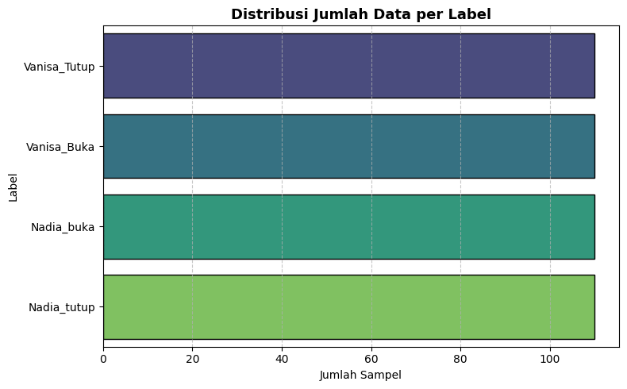
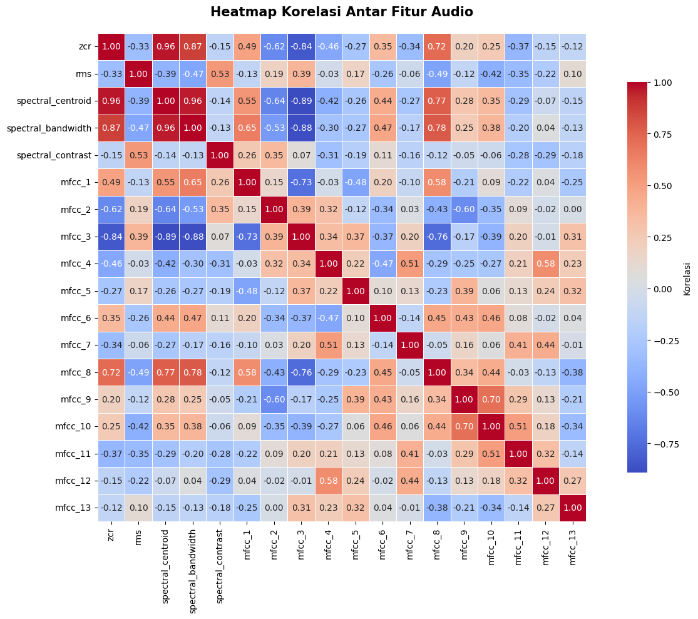
/tmp/ipykernel_5690/1512122122.py:62: FutureWarning:
Passing `palette` without assigning `hue` is deprecated and will be removed in v0.14.0. Assign the `x` variable to `hue` and set `legend=False` for the same effect.
sns.boxplot(data=df, x="label", y=feature, palette="Set2")
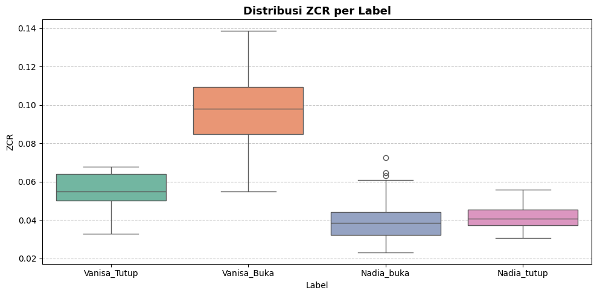
/tmp/ipykernel_5690/1512122122.py:62: FutureWarning:
Passing `palette` without assigning `hue` is deprecated and will be removed in v0.14.0. Assign the `x` variable to `hue` and set `legend=False` for the same effect.
sns.boxplot(data=df, x="label", y=feature, palette="Set2")
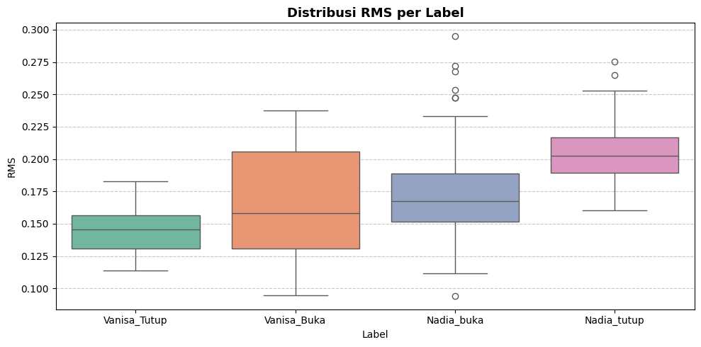
/tmp/ipykernel_5690/1512122122.py:62: FutureWarning:
Passing `palette` without assigning `hue` is deprecated and will be removed in v0.14.0. Assign the `x` variable to `hue` and set `legend=False` for the same effect.
sns.boxplot(data=df, x="label", y=feature, palette="Set2")
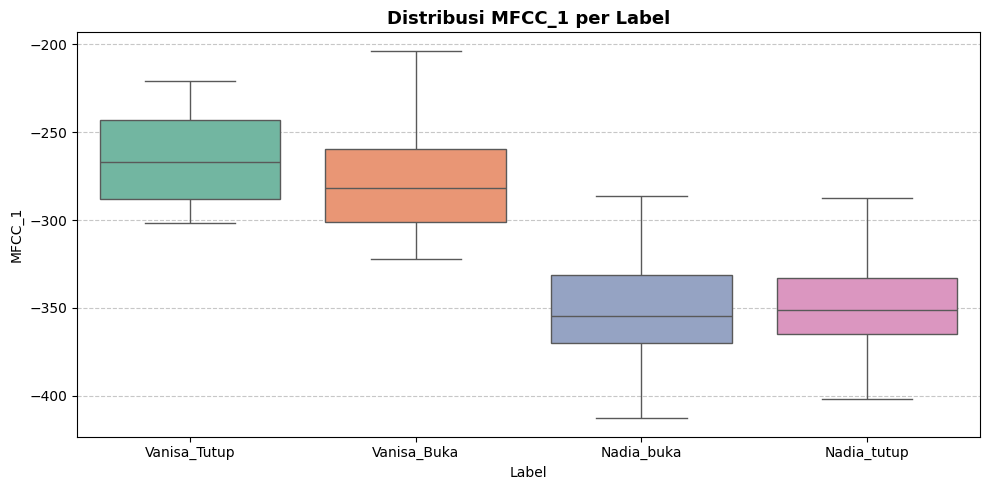
/tmp/ipykernel_5690/1512122122.py:62: FutureWarning:
Passing `palette` without assigning `hue` is deprecated and will be removed in v0.14.0. Assign the `x` variable to `hue` and set `legend=False` for the same effect.
sns.boxplot(data=df, x="label", y=feature, palette="Set2")
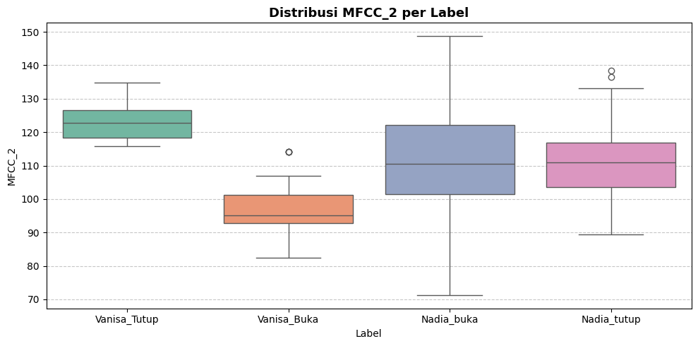
/tmp/ipykernel_5690/1512122122.py:62: FutureWarning:
Passing `palette` without assigning `hue` is deprecated and will be removed in v0.14.0. Assign the `x` variable to `hue` and set `legend=False` for the same effect.
sns.boxplot(data=df, x="label", y=feature, palette="Set2")
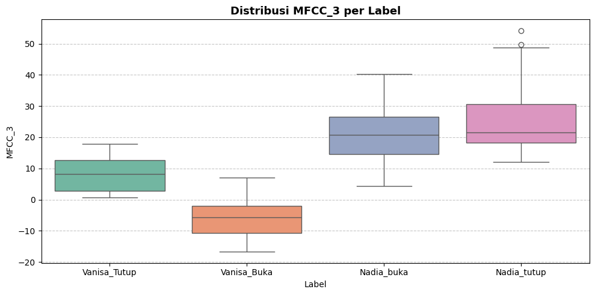
📈 STATISTIK DESKRIPTIF FITUR
--------------------------------------------------
count mean std min 25% \
zcr 440.0 0.058539 0.027046 0.022931 0.039233
rms 440.0 0.172209 0.037676 0.094053 0.144873
spectral_centroid 440.0 1479.283994 451.322769 675.624102 1143.319764
spectral_bandwidth 440.0 1919.771830 343.312385 1127.186067 1651.727676
spectral_contrast 440.0 18.807173 0.622587 17.201660 18.395338
mfcc_1 440.0 -310.618318 47.200538 -412.729095 -352.355156
mfcc_2 440.0 110.230675 14.315703 71.222153 99.151962
mfcc_3 440.0 12.263555 13.935786 -16.728512 2.312081
mfcc_4 440.0 13.571206 9.211579 -10.987894 5.788668
mfcc_5 440.0 -0.159648 5.491087 -13.502519 -2.966663
mfcc_6 440.0 -0.131056 5.044326 -16.759047 -3.549664
mfcc_7 440.0 1.843753 4.593259 -12.472884 -1.405207
mfcc_8 440.0 -8.511982 8.874899 -27.445133 -16.062795
mfcc_9 440.0 -10.918456 6.235384 -30.093117 -16.135085
mfcc_10 440.0 -7.377735 5.594793 -30.717396 -10.616035
mfcc_11 440.0 -13.885640 3.962463 -26.317684 -16.716200
mfcc_12 440.0 -6.848821 3.578127 -20.346581 -9.272810
mfcc_13 440.0 -9.902687 3.252329 -17.697680 -12.369454
50% 75% max
zcr 0.049507 0.067393 0.138785
rms 0.168454 0.199927 0.295181
spectral_centroid 1343.712064 1693.460597 2593.717288
spectral_bandwidth 1894.493025 2185.679678 2563.685944
spectral_contrast 18.732622 19.190536 21.100431
mfcc_1 -307.074158 -269.637421 -203.707413
mfcc_2 111.441383 119.841354 148.810974
mfcc_3 13.555278 21.216768 54.213249
mfcc_4 14.752215 21.443424 30.796293
mfcc_5 0.226798 3.437554 15.163170
mfcc_6 -0.492513 2.575161 14.501022
mfcc_7 1.634878 4.932848 15.925772
mfcc_8 -9.842824 -0.985902 8.233024
mfcc_9 -10.540639 -6.328976 6.304542
mfcc_10 -7.308356 -3.623574 5.367768
mfcc_11 -14.079281 -11.349608 1.066044
mfcc_12 -6.678641 -4.406858 2.978682
mfcc_13 -10.063722 -7.710913 0.194013
🚨 DETEKSI OUTLIER PER FITUR
--------------------------------------------------
Fitur Jumlah Outlier Persentase Outlier
zcr 25 5.68%
rms 1 0.23%
spectral_centroid 12 2.73%
spectral_bandwidth 0 0.00%
spectral_contrast 6 1.36%
mfcc_1 0 0.00%
mfcc_2 0 0.00%
mfcc_3 2 0.45%
mfcc_4 0 0.00%
mfcc_5 4 0.91%
mfcc_6 14 3.18%
mfcc_7 2 0.45%
mfcc_8 0 0.00%
mfcc_9 0 0.00%
mfcc_10 10 2.27%
mfcc_11 3 0.68%
mfcc_12 7 1.59%
mfcc_13 6 1.36%
/tmp/ipykernel_5690/1512122122.py:103: FutureWarning:
Passing `palette` without assigning `hue` is deprecated and will be removed in v0.14.0. Assign the `y` variable to `hue` and set `legend=False` for the same effect.
sns.barplot(data=outlier_df, x="Jumlah Outlier", y="Fitur", palette="rocket", edgecolor="black")
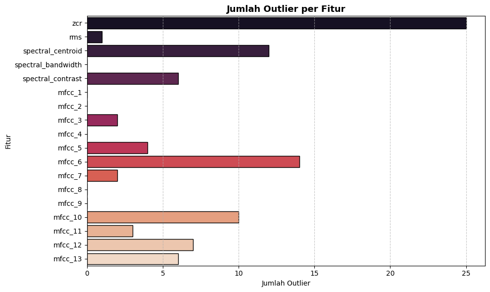
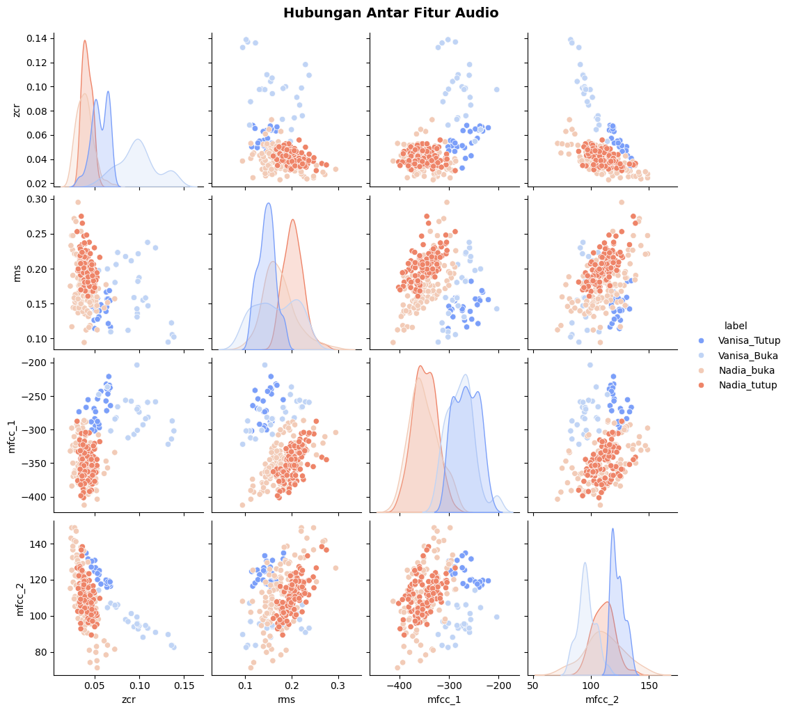
Tahap 8: Train Test Split#
test_size=0.2 → 20% data untuk testing, 80% untuk training
stratify=y → memastikan distribusi label di train dan test tetap seimbang
random_state=42 → supaya hasil split konsisten setiap kali dijalankan
Setelah ini, X_train, X_test, y_train, dan y_test siap dipakai untuk training model klasifikasi.
# ==================================================
# 🔹 IMPORT LIBRARY
# ==================================================
import pandas as pd
from sklearn.model_selection import train_test_split
# ==================================================
# 🔹 1. LOAD DATASET FITUR AUDIO
# ==================================================
df_features = pd.read_csv("audio_features.csv")
print("✅ Data fitur berhasil dimuat:")
display(df_features.head())
# ==================================================
# 🔹 2. PISAHKAN FITUR DAN LABEL
# ==================================================
X = df_features.drop(columns=['label'])
y = df_features['label']
# ==================================================
# 🔹 3. TRAIN-TEST SPLIT
# ==================================================
# 80% data training, 20% data testing
# Stratify = menjaga proporsi label agar seimbang
X_train, X_test, y_train, y_test = train_test_split(
X, y,
test_size=0.2,
random_state=42,
stratify=y
)
# ==================================================
# 🔹 4. CEK HASIL SPLIT
# ==================================================
print("✅ Data berhasil di-split!")
print(f"Jumlah data training : {len(X_train)}")
print(f"Jumlah data testing : {len(X_test)}")
print("\n🔍 Contoh data training:")
display(X_train.head())
print("\n🔍 Contoh data testing:")
display(X_test.head())
✅ Data fitur berhasil dimuat:
| label | zcr | rms | spectral_centroid | spectral_bandwidth | spectral_contrast | mfcc_1 | mfcc_2 | mfcc_3 | mfcc_4 | mfcc_5 | mfcc_6 | mfcc_7 | mfcc_8 | mfcc_9 | mfcc_10 | mfcc_11 | mfcc_12 | mfcc_13 | |
|---|---|---|---|---|---|---|---|---|---|---|---|---|---|---|---|---|---|---|---|
| 0 | Vanisa_Tutup | 0.049507 | 0.125984 | 1454.048021 | 2078.377451 | 18.321114 | -268.688171 | 125.369102 | 10.087667 | 21.354322 | -0.642616 | 2.520404 | 0.458828 | -8.783010 | -18.753090 | -7.350034 | -11.432769 | -4.396814 | -8.098873 |
| 1 | Vanisa_Tutup | 0.062843 | 0.138686 | 1604.376863 | 2098.004848 | 18.449672 | -257.350616 | 119.841354 | 2.749013 | 22.116590 | -10.704468 | -3.138860 | 9.616466 | -1.900774 | -15.357807 | -11.264039 | -12.687927 | -7.589251 | -11.424817 |
| 2 | Vanisa_Tutup | 0.064015 | 0.156282 | 1627.472509 | 2127.443676 | 18.687709 | -239.529114 | 115.841377 | 4.906523 | 20.325714 | -10.296597 | -4.253180 | 3.702055 | -1.526075 | -20.345367 | -12.646870 | -13.991186 | -6.347251 | -13.789545 |
| 3 | Vanisa_Tutup | 0.063566 | 0.145146 | 1580.935138 | 2031.770609 | 18.995097 | -271.856964 | 117.874214 | 2.189959 | 21.930073 | -8.171942 | -9.025284 | 1.033189 | -3.395963 | -15.516003 | -10.831207 | -15.707949 | -7.911689 | -9.299342 |
| 4 | Vanisa_Tutup | 0.046406 | 0.154104 | 1346.643150 | 1982.608045 | 18.923212 | -288.443451 | 127.009575 | 15.127504 | 18.345840 | -1.786182 | 0.912792 | 2.828473 | -11.928684 | -16.382843 | -8.435550 | -10.662820 | -4.011746 | -7.044550 |
✅ Data berhasil di-split!
Jumlah data training : 352
Jumlah data testing : 88
🔍 Contoh data training:
| zcr | rms | spectral_centroid | spectral_bandwidth | spectral_contrast | mfcc_1 | mfcc_2 | mfcc_3 | mfcc_4 | mfcc_5 | mfcc_6 | mfcc_7 | mfcc_8 | mfcc_9 | mfcc_10 | mfcc_11 | mfcc_12 | mfcc_13 | |
|---|---|---|---|---|---|---|---|---|---|---|---|---|---|---|---|---|---|---|
| 423 | 0.048804 | 0.182530 | 1301.549165 | 1702.252936 | 18.117018 | -363.055389 | 101.799515 | 23.214880 | 20.367310 | 4.255418 | -5.525286 | 1.987425 | -16.943417 | -15.542488 | -12.162926 | -13.127871 | -5.019482 | -3.871519 |
| 367 | 0.040747 | 0.214618 | 1217.837923 | 1776.634074 | 18.723932 | -334.607239 | 109.675148 | 18.201416 | 21.054302 | 10.326548 | -7.908155 | 6.966186 | -17.385138 | -9.668155 | -11.604367 | -14.334274 | -2.118298 | -4.318317 |
| 39 | 0.062843 | 0.138686 | 1604.376863 | 2098.004848 | 18.449672 | -257.350616 | 119.841354 | 2.749013 | 22.116590 | -10.704468 | -3.138860 | 9.616466 | -1.900774 | -15.357807 | -11.264039 | -12.687927 | -7.589251 | -11.424817 |
| 325 | 0.052659 | 0.147000 | 1256.687883 | 1708.346083 | 18.180126 | -363.113617 | 101.416313 | 21.817228 | 9.126031 | -3.801340 | 3.087960 | -6.398973 | -16.071560 | -3.286824 | 3.604620 | -9.548670 | -5.256666 | -10.032592 |
| 23 | 0.064015 | 0.156282 | 1627.472509 | 2127.443676 | 18.687709 | -239.529114 | 115.841377 | 4.906523 | 20.325714 | -10.296597 | -4.253180 | 3.702055 | -1.526075 | -20.345367 | -12.646870 | -13.991186 | -6.347251 | -13.789545 |
🔍 Contoh data testing:
| zcr | rms | spectral_centroid | spectral_bandwidth | spectral_contrast | mfcc_1 | mfcc_2 | mfcc_3 | mfcc_4 | mfcc_5 | mfcc_6 | mfcc_7 | mfcc_8 | mfcc_9 | mfcc_10 | mfcc_11 | mfcc_12 | mfcc_13 | |
|---|---|---|---|---|---|---|---|---|---|---|---|---|---|---|---|---|---|---|
| 329 | 0.033594 | 0.176729 | 1002.743560 | 1551.331292 | 19.766879 | -351.563019 | 125.226036 | 32.999142 | 13.402209 | -7.347831 | -3.991538 | 8.189779 | -1.476072 | -1.413106 | -6.133430 | -9.644629 | -5.880235 | -10.739511 |
| 432 | 0.034131 | 0.228441 | 974.951131 | 1455.104517 | 19.710219 | -331.533203 | 112.389076 | 28.683723 | 18.500719 | -4.696643 | -3.078937 | 5.707322 | -25.340792 | -18.030020 | -14.228753 | -21.625208 | -5.923501 | -7.494741 |
| 34 | 0.065366 | 0.121140 | 1693.460597 | 2185.679678 | 18.683460 | -241.563812 | 118.141144 | 2.312081 | 17.403627 | -10.106564 | -1.768064 | 5.980227 | -2.167029 | -18.626011 | -8.427271 | -13.443599 | -7.996668 | -14.632721 |
| 366 | 0.037720 | 0.173171 | 986.548204 | 1464.670762 | 18.105536 | -401.624237 | 106.885284 | 36.583889 | 13.841311 | 5.048841 | 4.214321 | 3.432169 | -18.623833 | -20.626762 | -17.086962 | -15.566890 | -10.620341 | -4.569761 |
| 401 | 0.041174 | 0.248190 | 1183.404565 | 1699.179226 | 19.679232 | -306.467194 | 115.543510 | 14.873791 | 25.296402 | 4.275884 | -5.268802 | 9.015927 | -24.896032 | -13.502984 | -10.055726 | -19.202614 | 0.986106 | -8.412015 |
Tahap 9 — Normalisasi Data#
# ==================================================
# 🔹 4. NORMALISASI FITUR (SETELAH SPLIT)
# ==================================================
from sklearn.preprocessing import StandardScaler
import joblib
import pandas as pd
# Buat objek StandardScaler
scaler = StandardScaler()
# Fit hanya di data training
X_train_scaled = scaler.fit_transform(X_train)
# Transform juga data test berdasarkan skala dari training
X_test_scaled = scaler.transform(X_test)
# ==================================================
# 🔹 5. SIMPAN SCALER UNTUK PREDIKSI AUDIO BARU
# ==================================================
joblib.dump(scaler, "scaler_audio.pkl")
print("✅ Scaler berhasil disimpan sebagai 'scaler_audio.pkl'")
# ==================================================
# 🔹 6. (OPSIONAL) BUAT DATAFRAME UNTUK DILIHAT
# ==================================================
df_train_scaled = pd.DataFrame(X_train_scaled, columns=X.columns)
df_test_scaled = pd.DataFrame(X_test_scaled, columns=X.columns)
# Gabungkan label supaya bisa dianalisis
df_train_scaled["label"] = y_train.reset_index(drop=True)
df_test_scaled["label"] = y_test.reset_index(drop=True)
print("\n✅ Contoh data hasil normalisasi (training set):")
display(df_train_scaled.head())
✅ Scaler berhasil disimpan sebagai 'scaler_audio.pkl'
✅ Contoh data hasil normalisasi (training set):
| zcr | rms | spectral_centroid | spectral_bandwidth | spectral_contrast | mfcc_1 | mfcc_2 | mfcc_3 | mfcc_4 | mfcc_5 | mfcc_6 | mfcc_7 | mfcc_8 | mfcc_9 | mfcc_10 | mfcc_11 | mfcc_12 | mfcc_13 | label | |
|---|---|---|---|---|---|---|---|---|---|---|---|---|---|---|---|---|---|---|---|
| 0 | -0.355673 | 0.259385 | -0.384180 | -0.620783 | -1.109189 | -1.133571 | -0.609830 | 0.778283 | 0.714901 | 0.766191 | -1.042821 | 0.068003 | -0.937445 | -0.749461 | -0.859132 | 0.222810 | 0.502371 | 1.803642 | Nadia_tutup |
| 1 | -0.650243 | 1.098934 | -0.567435 | -0.406399 | -0.148672 | -0.518511 | -0.060447 | 0.418389 | 0.786668 | 1.845293 | -1.507490 | 1.151427 | -0.987086 | 0.208163 | -0.757172 | -0.097898 | 1.278617 | 1.670679 | Nadia_tutup |
| 2 | 0.157635 | -0.887767 | 0.278751 | 0.519866 | -0.582722 | 1.151810 | 0.648721 | -0.690869 | 0.897642 | -1.892827 | -0.577458 | 1.728153 | 0.753074 | -0.719354 | -0.695048 | 0.339764 | -0.185201 | -0.444146 | Vanisa_Tutup |
| 3 | -0.214729 | -0.670242 | -0.482387 | -0.603221 | -1.009312 | -1.134830 | -0.636561 | 0.677952 | -0.459435 | -0.665843 | 0.636798 | -1.756955 | -0.839464 | 1.248437 | 2.019093 | 1.174298 | 0.438910 | -0.029833 | Nadia_buka |
| 4 | 0.200479 | -0.427377 | 0.329311 | 0.604716 | -0.205999 | 1.537118 | 0.369693 | -0.535991 | 0.710555 | -1.820330 | -0.794755 | 0.441123 | 0.795183 | -1.532418 | -0.947472 | -0.006692 | 0.147111 | -1.147865 | Vanisa_Tutup |
Tahap 10 : Training & Pilih Model Terbaik#
melatih tiga model klasifikasi audio (Random Forest, SVM, Naive Bayes), mengevaluasi performanya menggunakan akurasi, classification report, dan confusion matrix, lalu memilih model terbaik secara otomatis berdasarkan akurasi tertinggi. Model terbaik kemudian disimpan untuk digunakan pada prediksi audio baru.
# ==================================================
# 🔹 TRAINING & PILIH MODEL TERBAIK DENGAN OUTPUT RAPI
# ==================================================
from sklearn.ensemble import RandomForestClassifier
from sklearn.svm import SVC
from sklearn.naive_bayes import GaussianNB
from sklearn.metrics import accuracy_score, classification_report, confusion_matrix
import seaborn as sns
import matplotlib.pyplot as plt
import joblib
# Inisialisasi model
models = {
"Random Forest": RandomForestClassifier(n_estimators=100, random_state=42),
"SVM (RBF Kernel)": SVC(kernel='rbf', probability=True, random_state=42),
"Naive Bayes": GaussianNB()
}
best_acc = 0
best_model_name = None
best_model = None
for name, model in models.items():
print(f"\n=== {name} ===")
# Training pakai data yang sudah dinormalisasi
model.fit(X_train_scaled, y_train)
# Prediksi pakai data test yang sudah dinormalisasi
y_pred = model.predict(X_test_scaled)
# Akurasi
acc = accuracy_score(y_test, y_pred)
print(f"Akurasi: {acc:.4f}")
# Classification report
print("\nClassification Report:")
print(classification_report(y_test, y_pred))
# Confusion matrix
cm = confusion_matrix(y_test, y_pred)
plt.figure(figsize=(6, 4))
sns.heatmap(cm, annot=True, fmt='d', cmap='Blues',
xticklabels=model.classes_, yticklabels=model.classes_)
plt.title(f"Confusion Matrix - {name}")
plt.xlabel("Predicted")
plt.ylabel("Actual")
plt.show()
# Update model terbaik
if acc > best_acc:
best_acc = acc
best_model_name = name
best_model = model
# Simpan model terbaik
joblib.dump(best_model, "best_audio_model.pkl")
print(f"\n✅ Model terbaik: {best_model_name} dengan akurasi {best_acc:.4f}")
print("✅ Model tersimpan sebagai 'best_audio_model.pkl'")
=== Random Forest ===
Akurasi: 1.0000
Classification Report:
precision recall f1-score support
Nadia_buka 1.00 1.00 1.00 22
Nadia_tutup 1.00 1.00 1.00 22
Vanisa_Buka 1.00 1.00 1.00 22
Vanisa_Tutup 1.00 1.00 1.00 22
accuracy 1.00 88
macro avg 1.00 1.00 1.00 88
weighted avg 1.00 1.00 1.00 88
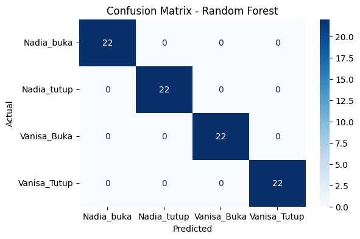
=== SVM (RBF Kernel) ===
Akurasi: 1.0000
Classification Report:
precision recall f1-score support
Nadia_buka 1.00 1.00 1.00 22
Nadia_tutup 1.00 1.00 1.00 22
Vanisa_Buka 1.00 1.00 1.00 22
Vanisa_Tutup 1.00 1.00 1.00 22
accuracy 1.00 88
macro avg 1.00 1.00 1.00 88
weighted avg 1.00 1.00 1.00 88
=== Naive Bayes ===
Akurasi: 1.0000
Classification Report:
precision recall f1-score support
Nadia_buka 1.00 1.00 1.00 22
Nadia_tutup 1.00 1.00 1.00 22
Vanisa_Buka 1.00 1.00 1.00 22
Vanisa_Tutup 1.00 1.00 1.00 22
accuracy 1.00 88
macro avg 1.00 1.00 1.00 88
weighted avg 1.00 1.00 1.00 88
✅ Model terbaik: Random Forest dengan akurasi 1.0000
✅ Model tersimpan sebagai 'best_audio_model.pkl'
Tahap 11 : Evaluasi Model Terbaik#
# ==================================================
# 🔹 EVALUASI MODEL TERBAIK (SETELAH TRAINING)
# ==================================================
import pandas as pd
import seaborn as sns
import matplotlib.pyplot as plt
from sklearn.metrics import accuracy_score, classification_report, confusion_matrix
import joblib
# Load model terbaik
best_model = joblib.load("best_audio_model.pkl")
# Gunakan data test yang sudah dinormalisasi
y_pred = best_model.predict(X_test_scaled)
# Akurasi
acc = accuracy_score(y_test, y_pred)
print(f"📌 Akurasi Model Terbaik: {acc:.4f}\n")
# Classification report
print("📊 Classification Report:")
report = classification_report(y_test, y_pred, output_dict=True, zero_division=0)
df_report = pd.DataFrame(report).transpose()
display(df_report)
# Confusion matrix
cm = confusion_matrix(y_test, y_pred)
plt.figure(figsize=(6, 5))
sns.heatmap(cm, annot=True, fmt='d', cmap='Blues',
xticklabels=best_model.classes_, yticklabels=best_model.classes_)
plt.title("Confusion Matrix - Model Terbaik")
plt.xlabel("Predicted Label")
plt.ylabel("True Label")
plt.show()
📌 Akurasi Model Terbaik: 1.0000
📊 Classification Report:
| precision | recall | f1-score | support | |
|---|---|---|---|---|
| Nadia_buka | 1.0 | 1.0 | 1.0 | 22.0 |
| Nadia_tutup | 1.0 | 1.0 | 1.0 | 22.0 |
| Vanisa_Buka | 1.0 | 1.0 | 1.0 | 22.0 |
| Vanisa_Tutup | 1.0 | 1.0 | 1.0 | 22.0 |
| accuracy | 1.0 | 1.0 | 1.0 | 1.0 |
| macro avg | 1.0 | 1.0 | 1.0 | 88.0 |
| weighted avg | 1.0 | 1.0 | 1.0 | 88.0 |
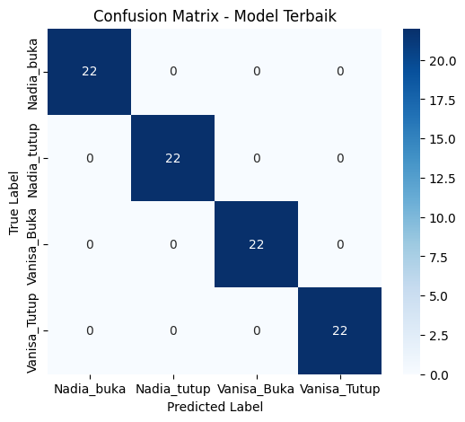
Tahap 12: Prediksi Data Baru#
# ==================================================
# 🔹 IMPORT LIBRARY
# ==================================================
import os
import numpy as np
import pandas as pd
import librosa
import joblib
# ==================================================
# 🔹 FUNGSIONAL EKSTRAKSI FITUR AUDIO
# ==================================================
def zero_crossing_rate(y):
return np.mean(librosa.feature.zero_crossing_rate(y=y).T, axis=0)[0]
def rms(signal):
return np.sqrt(np.mean(signal**2))
def spectral_centroid(y, sr):
return np.mean(librosa.feature.spectral_centroid(y=y, sr=sr))
def spectral_bandwidth(y, sr):
return np.mean(librosa.feature.spectral_bandwidth(y=y, sr=sr))
def spectral_contrast(y, sr):
return np.mean(librosa.feature.spectral_contrast(y=y, sr=sr))
def mfcc_features(y, sr, n_mfcc=13):
mfccs = librosa.feature.mfcc(y=y, sr=sr, n_mfcc=n_mfcc)
return np.mean(mfccs, axis=1)
def extract_features(file_path):
"""Ekstraksi fitur untuk satu file audio"""
y, sr = librosa.load(file_path, sr=22050)
features = [
zero_crossing_rate(y),
rms(y),
spectral_centroid(y, sr),
spectral_bandwidth(y, sr),
spectral_contrast(y, sr)
]
mfccs = mfcc_features(y, sr)
features.extend(mfccs.tolist())
return np.array(features).reshape(1, -1)
# ==================================================
# 🔹 LOAD MODEL & SCALER
# ==================================================
model = joblib.load("best_audio_model.pkl")
scaler = joblib.load("scaler_audio.pkl")
# ==================================================
# 🔹 PREDIKSI SPEAKER BARU DENGAN THRESHOLD
# ==================================================
def predict_speaker(file_path, threshold=0.7):
# Ekstrak fitur
features = extract_features(file_path)
# Pastikan jumlah fitur sesuai scaler
if features.shape[1] != scaler.n_features_in_:
print(f"❌ Jumlah fitur {features.shape[1]} tidak cocok dengan scaler ({scaler.n_features_in_})")
return
# Normalisasi
features_scaled = scaler.transform(features)
# Prediksi probabilitas
probs = model.predict_proba(features_scaled)[0]
max_prob = np.max(probs)
pred_label = model.classes_[np.argmax(probs)]
# Cek threshold
if max_prob < threshold:
print("❌ Speaker tidak dikenal")
print(f"Confidence tertinggi: {max_prob:.2f}")
else:
print(f"✅ Prediksi Speaker: {pred_label}")
print(f"Confidence: {max_prob:.2f}")
# ==================================================
# 🔹 CONTOH PENGGUNAAN
# ==================================================
file_new = "clean_audio/ulva_buka.wav" # ganti dengan path file audio baru
predict_speaker(file_new, threshold=0.7)
❌ Speaker tidak dikenal
Confidence tertinggi: 0.57
/usr/local/python/3.12.1/lib/python3.12/site-packages/sklearn/base.py:493: UserWarning: X does not have valid feature names, but StandardScaler was fitted with feature names
warnings.warn(
Tahap 13: Deployment#
Tampilan UI dari streamlit file app.py#
# ============================================================
# 🎧 STREAMLIT APP — Prediksi Suara Buka/Tutup (Nadia & Vanisa Only)
# ============================================================
import streamlit as st
import numpy as np
import pandas as pd
import librosa
import librosa.display
import joblib
import os
import matplotlib.pyplot as plt
import seaborn as sns
from streamlit_webrtc import webrtc_streamer, AudioProcessorBase, WebRtcMode
# ============================================================
# Konfigurasi Streamlit
# ============================================================
st.set_page_config(
page_title="Prediksi Suara Buka/Tutup (Nadia & Vanisa Only)",
page_icon="🎵",
layout="centered",
)
# ============================================================
# Load model & scaler
# ============================================================
@st.cache_resource
def load_model_scaler():
model = joblib.load("best_audio_model.pkl")
scaler = joblib.load("scaler_audio.pkl")
return model, scaler
model, scaler = load_model_scaler()
# ============================================================
# Fungsi ekstraksi fitur
# ============================================================
def zero_crossing_rate(y):
return np.mean(librosa.feature.zero_crossing_rate(y=y).T, axis=0)[0]
def rms(signal):
return np.sqrt(np.mean(signal**2))
def spectral_centroid(y, sr):
return np.mean(librosa.feature.spectral_centroid(y=y, sr=sr))
def spectral_bandwidth(y, sr):
return np.mean(librosa.feature.spectral_bandwidth(y=y, sr=sr))
def spectral_contrast(y, sr):
return np.mean(librosa.feature.spectral_contrast(y=y, sr=sr))
def mfcc_features(y, sr, n_mfcc=13):
mfccs = librosa.feature.mfcc(y=y, sr=sr, n_mfcc=n_mfcc)
return np.mean(mfccs, axis=1)
def extract_features(file_path):
y, sr = librosa.load(file_path, sr=22050)
features = [
zero_crossing_rate(y),
rms(y),
spectral_centroid(y, sr),
spectral_bandwidth(y, sr),
spectral_contrast(y, sr),
]
mfccs = mfcc_features(y, sr)
features.extend(mfccs.tolist())
return np.array(features).reshape(1, -1), y, sr
# ============================================================
# Prediksi (Locked Speaker: Nadia & Vanisa)
# ============================================================
def predict_audio(file_path=None, y=None, sr=None, threshold=0.6):
if file_path:
features, y, sr = extract_features(file_path)
else:
# Buat fitur dari waveform langsung
features = [
zero_crossing_rate(y),
rms(y),
spectral_centroid(y, sr),
spectral_bandwidth(y, sr),
spectral_contrast(y, sr),
]
mfccs = mfcc_features(y, sr)
features.extend(mfccs.tolist())
features = np.array(features).reshape(1, -1)
features_scaled = scaler.transform(features)
probs = model.predict_proba(features_scaled)[0]
labels = model.classes_
idx_top = np.argmax(probs)
pred_label = labels[idx_top]
pred_prob = probs[idx_top]
parts = pred_label.lower().split("_")
speaker = parts[0] if len(parts) > 0 else "unknown"
status = parts[1].capitalize() if len(parts) > 1 else "-"
allowed = ["nadia", "vanisa"]
if speaker not in allowed or pred_prob < threshold:
speaker = "Unknown"
status = "Tidak diketahui"
return speaker.capitalize(), status, pred_prob, probs, labels, y, sr
# ============================================================
# UI Streamlit
# ============================================================
st.title("🎧 Prediksi Suara Buka/Tutup")
st.markdown(
"""
<p style="font-size:16px;">Aplikasi ini hanya menerima suara dari <b>Nadia</b> dan <b>Vanisa</b>.<br>
Jika suara lain terdeteksi, hasil akan menjadi <b>Unknown</b>.</p>
""",
unsafe_allow_html=True,
)
# 🧩 Slider threshold
st.sidebar.header("⚙️ Pengaturan Model")
threshold = st.sidebar.slider(
"Ambang Confidence (Threshold)",
min_value=0.3,
max_value=0.9,
value=0.6,
step=0.05,
help="Semakin tinggi nilainya, semakin ketat sistem dalam mengenali suara.",
)
# ============================================================
# Upload file audio
# ============================================================
uploaded_file = st.file_uploader("🎵 Upload file audio (.wav)", type=["wav"])
if uploaded_file:
temp_path = "temp_audio.wav"
with open(temp_path, "wb") as f:
f.write(uploaded_file.read())
st.audio(temp_path, format="audio/wav")
with st.spinner("⏳ Memproses audio..."):
speaker, status, prob, probs, labels, y, sr = predict_audio(temp_path, threshold)
# Tampilkan hasil
st.markdown("---")
st.subheader("🎯 Hasil Prediksi")
col1, col2 = st.columns(2)
with col1:
st.metric("Speaker", speaker)
with col2:
st.metric("Status Suara", status)
st.metric("Confidence (%)", f"{prob*100:.2f}%")
# Tabel probabilitas
prob_df = pd.DataFrame({"Kelas": labels, "Probabilitas (%)": [round(float(p)*100, 2) for p in probs]}).sort_values("Probabilitas (%)", ascending=False)
st.markdown("#### 📊 Probabilitas Tiap Kelas")
st.table(prob_df.style.set_table_styles([{"selector": "th","props":[("text-align","center"),("font-weight","bold")]},{"selector":"td","props":[("text-align","center")]}]))
# Waveform & Mel Spectrogram
st.subheader("📈 Waveform Audio")
fig, ax = plt.subplots(figsize=(8, 3))
librosa.display.waveshow(y, sr=sr, ax=ax)
ax.set_title("Waveform Audio", fontsize=12)
st.pyplot(fig)
st.subheader("🎛️ Mel Spectrogram")
S = librosa.feature.melspectrogram(y=y, sr=sr)
S_dB = librosa.power_to_db(S, ref=np.max)
fig, ax = plt.subplots(figsize=(10, 4))
img = librosa.display.specshow(S_dB, sr=sr, x_axis='time', y_axis='mel', ax=ax)
fig.colorbar(img, ax=ax, format='%+2.0f dB')
ax.set_title("Mel Spectrogram", fontsize=12)
st.pyplot(fig)
# Distribusi probabilitas
st.subheader("📉 Distribusi Probabilitas")
plt.figure(figsize=(6, 4))
sns.barplot(x="Kelas", y="Probabilitas (%)", data=prob_df)
plt.xticks(rotation=45)
plt.ylim(0, 100)
plt.tight_layout()
st.pyplot(plt)
os.remove(temp_path)
# ============================================================
# Rekam suara langsung dari browser
# ============================================================
st.markdown("---")
st.subheader("🎤 Rekam Suara Langsung")
webrtc_ctx = webrtc_streamer(
key="audio",
mode=WebRtcMode.SENDONLY,
audio_receiver_size=256,
media_stream_constraints={"audio": True, "video": False},
)
if webrtc_ctx.audio_receiver:
import _queue
audio_frames = []
try:
while True:
frame = webrtc_ctx.audio_receiver.get_frame(block=False)
audio_frames.append(frame)
except _queue.Empty:
pass
if audio_frames:
audio_data = np.concatenate([f.to_ndarray() for f in audio_frames], axis=0)
if audio_data.ndim > 1:
audio_data = np.mean(audio_data, axis=1)
y = audio_data.astype(np.float32)
sr = 44100
with st.spinner("⏳ Memproses audio rekaman..."):
speaker, status, prob, probs, labels, _, _ = predict_audio(y=y, sr=sr, threshold=threshold)
# Tampilkan hasil rekaman
st.markdown("---")
st.subheader("🎯 Hasil Prediksi Rekaman")
col1, col2 = st.columns(2)
with col1:
st.metric("Speaker", speaker)
with col2:
st.metric("Status Suara", status)
st.metric("Confidence (%)", f"{prob*100:.2f}%")
---------------------------------------------------------------------------
ModuleNotFoundError Traceback (most recent call last)
Cell In[14], line 14
12 import matplotlib.pyplot as plt
13 import seaborn as sns
---> 14 from streamlit_webrtc import webrtc_streamer, AudioProcessorBase, WebRtcMode
16 # ============================================================
17 # Konfigurasi Streamlit
18 # ============================================================
19 st.set_page_config(
20 page_title="Prediksi Suara Buka/Tutup (Nadia & Vanisa Only)",
21 page_icon="🎵",
22 layout="centered",
23 )
ModuleNotFoundError: No module named 'streamlit_webrtc'